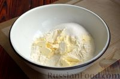
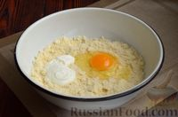
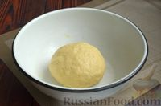
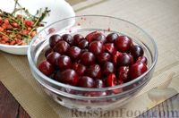
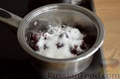
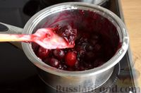
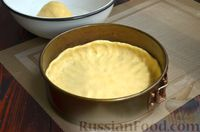
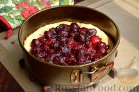
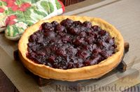
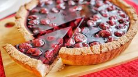

Отличный песочный тарт с вишнёвой начинкой - быстрое и вкусное летнее угощение. Выпекается пирог-тарт быстро, песочное тесто получается мягким, но хорошо держит на себе сочную вишневую начинку.
| Продукт | Пропорция |
| Масло | 100гр |
| Сметана | 50гр |
| Яйцо | 1шт |
| Сахар | 30гр |
| Мука | 250гр |
| Разрыхлитель | 0,5 ч ложки |
| Соль | 1 щепотка |
| Вишня | 600гр |
| Крахмал | 3 ст. ложки |
1. Подготовьте ингредиенты. Из этого количества продуктов можно приготовить большой тарт или, как я, два поменьше. Сливочное масло доставайте из холодильника в последнюю очередь, чтобы оно было холодным.

2. Соедините в глубокой миске муку, разрыхлитель, щепотку соли и сахар. Масло нарежьте кубиками и добавьте к муке. Руками перетрите масло с мукой в песочную крошку.

3. Добавьте яйцо и сметану.

4. Быстро соедините все ингредиенты теста в шар. Оставьте тесто на 15 минут в холодильнике. А пока включите духовку для разогрева до 180 градусов и приготовьте начинку.

5.Для начинки промойте вишню, отделите черешки и удалите косточки. Вишни можно взять больше, пирог от этого только выиграет.

6. Соедините в кастрюле подготовленную вишню, сахар и крахмал (количество сахара можно менять в зависимости от сладости вишни).

7.Поставьте кастрюлю на огонь и нагревайте содержимое до полного растворения сахара и загустения вишнёвой массы. Получится густой кисель - это и будет вишневая начинка тарта.

8. Тесто выложите в форму диаметром 26 см. Я выпекала два тарта, поэтому взяла форму диаметром 18 см, а тесто разделила пополам.Пальцами распределите тесто по дну и сформируйте бортики высотой 1,5-2 см. Наколите дно коржа в нескольких местах вилкой.

9. Выпекайте песочный корж в разогретой до 180 градусов духовке 15 минут.

10. Выложите на корж начинку (я в свой небольшой тарт выкладываю половину вишневой начинки). Форму верните в духовку и выпекайте пирог с вишней 10 минут.

Вишневый тарт готов. Аккуратно освободите его из формы. Ароматный вишневый пирог-тарт - яркое украшение стола. Приятного аппетита!